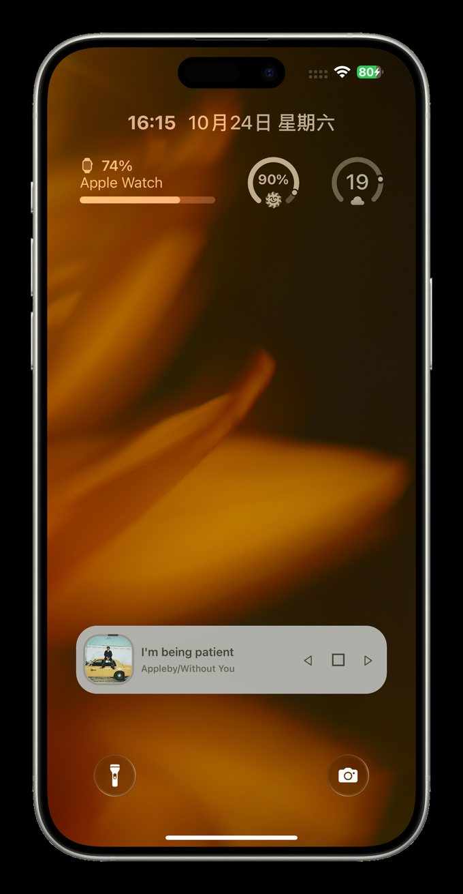

Made by Put_Story
熟悉的 iPhone。
Your iPhone. A little more you.
从锁屏的音乐，到界面的玻璃质感。
gu3hi.github.io/repo/ 复制地址 ⧉ Rootless / RootHide 中文 / English
Quart17 ON DEVICE / 实机效果

音乐播放器 壁纸视图
点击，换个视角 ↗
01 / THE COLLECTION
各有所长，一起刚好。 Small details.
0.4.20 当前版本 / Current Vela 常用控制，一次上滑。
Your everyday controls, one swipe away.
下载次数 / Downloads —
连接、音乐、亮度与音量，集中在浮动面板中。横滑进入快捷指令页，自由配置配色、主题和玻璃外观。
Connectivity, music, brightness and volume in one floating panel. Swipe to shortcuts and configure colors, themes and optional glass.
快捷指令两列四行 Two columns, four visible rows 可重放的手势导览 Replayable gesture tour 配色与主题无需激活 Colors and themes, no activation 你的浏览器不支持视频播放。Your browser does not support video playback. Vela · 真机演示 / On device 单独播放 / Open video ↗
2.8.1 当前版本 / Current Quart17 让锁屏，跟着你的节奏。
A Lock Screen that feels like you.
下载次数 / Downloads —
小时间、音乐播放器、专辑封面与通知排版。
Compact clock, music controls, album artwork and notification layouts. Customize the details you see and use.
锁屏播放器 Music player 通知布局与缩放 Notification layout 下拉清理手势 Pull to clear
1.2.40 预发布 / Prerelease Aura 给日常界面，一点通透。
A softer view of the familiar.
下载次数 / Downloads —
控制中心、Dock、文件夹与应用组件的玻璃效果。可独立配置，也可与 Quart17 配合使用。
Glass effects for Control Center, the Dock, folders and app components. Configurable on its own, or alongside Quart17.
MADE FOR THE EVERYDAY
不必 换一部 手机。 换一种， 每天见面的 方式。 Keep the iPhone you know.
01 添加软件源 在 iPhone 上点击添加；或复制下方地址，在 Sileo 的软件源中手动添加。
Open in Sileo on iPhone, or add the source URL manually.
02 选对越狱环境 Rootless 与 RootHide 安装包不可混用。按越狱环境选择，不按处理器型号选择。
Match your jailbreak environment. Rootless and RootHide packages are not interchangeable.
03 调整成喜欢的样子 安装后，进入「设置」中的插件页面配置。兼容性与版本说明请查看插件详情。
Configure the tweak in Settings. Check its detail page for compatibility and release notes.
软件源地址 / Repository URL https://gu3hi.github.io/repo/
复制地址 / Copy ⧉
03 / GOOD TO KNOW
安装前，了解这些。
支持哪些 iOS 版本？ ＋ Vela 的最低部署版本为 iOS 16；Quart17 2.8.1 支持 iOS 16–17（iOS 16 尚未真机测试）；Aura 面向 iOS 16–17 越狱环境。请查看各自详情页的兼容性与测试状态。
Vela has a minimum deployment target of iOS 16. Quart17 2.8.1 supports iOS 16–17 (iOS 16 not yet device-tested). Aura targets jailbroken iOS 16–17. Check each detail page for compatibility and testing status.
Rootless 和 RootHide 怎么选？ ＋ Rootless 对应 iphoneos-arm64，RootHide 对应 iphoneos-arm64e。请按实际越狱环境选择，不要仅看处理器型号。
Use iphoneos-arm64 for Rootless and iphoneos-arm64e for RootHide. Choose by your jailbreak environment, not the processor.
Quart17 自带玻璃效果吗？ ＋ 当前拆分版由 Aura 提供玻璃效果，Quart17 保留播放器与通知等功能。需要玻璃效果时请另行安装 Aura。
In the current split edition, Aura provides glass rendering. Install it separately alongside Quart17 for glass effects.
Aura 当前是正式版吗？ ＋ 当前上架的 1.2.40 是预发布包，安装后真机验收尚未完成。请先阅读 Aura 详情页中的状态说明。
The listed 1.2.40 build is a prerelease. Post-install device validation is pending. Read the status notes before installing.
在哪里查看完整更新记录？ ＋ 在 Quart17 更新记录 、Aura 更新记录 与 Vela 本次更新 中查看中英文说明。
Each detail page includes bilingual release information.
点击添加没有打开 Sileo？ ＋ 请在已安装 Sileo 的 iPhone 上打开本页。也可以复制软件源地址，在 Sileo 中手动添加。
Open this page on an iPhone with Sileo installed, or copy the repository URL and add it manually.

 0.4.20 当前版本 / Current
0.4.20 当前版本 / Current